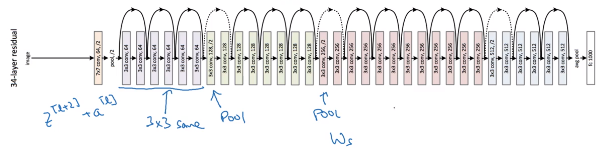
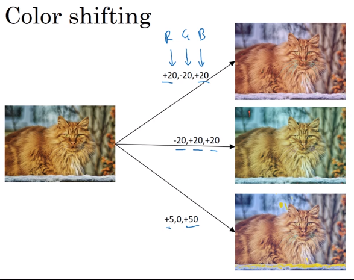

I-Case studies
Why look at case studies?
Good way to get intuition of different component of CNN: case study & reading paper.
Outline
- classic networks:
- LeNet-5
- AlexNet
- VGG
- ResNet (152-layer NN)
- Inception
Classic Networks
LeNet-5(1998)

Goal: recognize hand-written digits.
image → 2 CONV-MEANPOOL layers, all CONV are valid (without padding) → 2 FC → softmax

takeaway (patterns still used today):
- as go deeper, n_H, n_W goes down, n_C goes up
- conv-pool repeated some times, then FC-FC-output
sidenote:
- used sigmoid/tanh as activation, instead of ReLU.
- has non-linearity after pooling
- orignial paper hard to read
AlexNet

Same pattern: conv-maxpool layers → FC layers → softmax
but much more params.

sidenote:
- use ReLU as activation
- multi-GPU training
- "local response normalization" (LRN): normalize across all channels (not widely used today).
- a lot hparams to pick
VGG-16

Much less hparams:
All CONV: 33,s=1,padding=same, MAXPOOL: 22,s=2
→ e.g. "(CONV 64) * 2" meaning 2 conv layers (3*3,s=1,padding=same) of 64 channels.

note:
- pretty large even by modern standard: 138M params
- simplicity in architecture: POOL reduce n_H/n_W by 2 each time; CONV n_C=64->128->256->512 (increase by 2), very systematic.
ResNets
Very deep NN are hard to train → ResNet: skip connections, to be able to train ~100 layers NN.
Residual block

Normal NN: from a[l] to a[l+2], two linear & ReLU operations. "main path".
ResNet: a[l] taks shortcut and goes directly to a[l+2]'s non-linearity. "shortcut" / "skip connection".

Using residual block allows training very deep NN:
stack them to get ResNet (i.e. add shortcuts to "plain" NN).

Problem of training plain NN: training error goes up (in practice) when having deeper NN.
Because deeper NN are harder to train (vanishing/exploding gradients, etc.)

With ResNet: training error goes down even with deeper layers.

Why ResNets Work
a[l+2] = g(z[l+2] + a[l])
= g(w[l+1] * a[l+1] + b[l+1] + a[l])
→ note: when applying weight decay, w can be small (w~=0, b~=0)
⇒ a[l+2] ~= g(a[l]) = a[l] (assume g=ReLU)
⇒ it's easy to get a[l+2]=a[l], i.e. identity function from a[l] to a[l+2] is easily learned
→ whereas in plain NN, it's difficult to learn an identity function between layers, thus more layers make result worse
→ adding 2 layers doesn't hurt the network to learn a shallower NN's function, i.e. performance is not hurt when increasing #layers.
→ when necessary can do even better than learning identity function

Side note:
z[l+2]anda[l]have the same dimension (so that they can be added in g) → i.e. many "same" padding are used to preserve dimension.- If their dimensions are not matched (e.g. for pooling layers) → add extra
w_sto be applied ona[l].


Networks in Networks and 1x1 Convolutions
Using 1*1 conv: for one single channel, just multiply the input image(slice) by a constant...
But for >1 channels: each output number is inner prod of input channel "slice" and conv filter.
11 conv: ~= fully-connected layer applied to each of n_Hn_W slices, adds non-linearity to NN.
→ 11 conv also called "network in network*"
example:
To shrink #channels via 1*1 conv.
Inception Network Motivation
Instead of choosing filter size, do them all in parallel.
note: use SAME padding & stride=1 to have the same n_H, n_W
Problem: computation cost.
example: input shape = 2828192, filter 55192, 32 filters, output shape = 282832
totoal #multiplication = 28 * 28 * 32 * 5 * 5 * 192 = 120M

→ reduce #computation with 1*1 conv
Reduce n_C of input by 11 conv ("bottleneck-layer") before doing the 55 conv.
computation = 11192 * 282816 + 5516 * 282832 = 12.4M

Does bottleneck layer hurt model performance ? → no.
Inception Network
Inception module:
For max pooling layer, out n_C equals input n_C → use a 11 conv to shrink n_C*.
Inception network:
- Putting inception modules together.
- Have side branches: taking hidden layer and feed to FC for output.
— ensure features from hidden units at intermediate layers are not too bad for prediction — kind of regularization

The name "inception" come from: a meme...
II-Practical advice for using ConvNets
Advices on how to use these classical CNN models.
Using Open-Source Implementation
Difficult to replicate the work just from paper: a lot of details&hparams
→ use open-sourced version.
Transfer Learning
Download weights of other's NN as pretrained params.
→ pretrained params are trained on huge datasets, and takes weeks to train on multiple GPUs.
example: cat detector
- 3 class: tigger/misty/neither
- training set at hand is small
- → download both code and weights online
e.g. ImageNet NN
→ change last layer's softmax
→ all Conv/Pool layers set frozen (not trainable)
→ only training softmax layer's weight with training set.
OR:
Precompute the hidden layer (fixed function mapping from x to feature vector) and save to disk.
→ train a shallow model on top. → save computation.
If have a large training set at hand ⇒ freeze a few layers and train the rest.

If have a huge dataset: train the whole NN.
Data Augmentation
More data are alway welcome.
Common augmentation method:
- Mirroring
- Randome cropping
- Rotation/Shearing/Local warping: used a bit less in practice
- Color shifting

In practice: shifts drawn from some random distribution.
e.g. PCA-color-augmentation (details in AlexNet paper): ~keep overall color the same.
Implementaing distortions during training
If data is huge → CPU thread to get stream of images → add distortion for each image → form minibatch of data → pass to training.

State of Computer Vision
Observations for DL for CV.
Data VS. hand-engineering
As more data are available → simpler algo, less hand-engineering.

Learing algo has 2 sources of knowledge:
- labeled data
- hand engineered features / network architecture / specialized components
Transfer learning can help when dataset is small.
Tips for doing well on benchmarks/winning competitions
- Ensembling:
Train several(3~15) NN independently, then average their outputs.
- Multi-crop at test time
Predict on multiple versions of test images and average results.
e.g. 10-crop at test time

Part 11 of series «Andrew Ng Deep Learning MOOC»：
- [Neural Networks and Deep Learning] week1. Introduction to deep learning
- [Neural Networks and Deep Learning] week2. Neural Networks Basics
- [Neural Networks and Deep Learning] week3. Shallow Neural Network
- [Neural Networks and Deep Learning] week4. Deep Neural Network
- [Improving Deep Neural Networks] week1. Practical aspects of Deep Learning
- [Improving Deep Neural Networks] week2. Optimization algorithms
- [Improving Deep Neural Networks] week3. Hyperparameter tuning, Batch Normalization and Programming Frameworks
- [Structuring Machine Learning Projects] week1. ML Strategy (1)
- [Structuring Machine Learning Projects] week2. ML Strategy (2)
- [Convolutional Neural Networks] week1. Foundations of Convolutional Neural Networks
- [Convolutional Neural Networks] week2. Deep convolutional models: case studies
- [Convolutional Neural Networks] week3. Object detection
- [Convolutional Neural Networks] week4. Special applications: Face recognition & Neural style transfer
- [Sequential Models] week1. Recurrent Neural Networks
- [Sequential Models] week2. Natural Language Processing & Word Embeddings
- [Sequential Models] week3. Sequence models & Attention mechanism
Disqus 留言